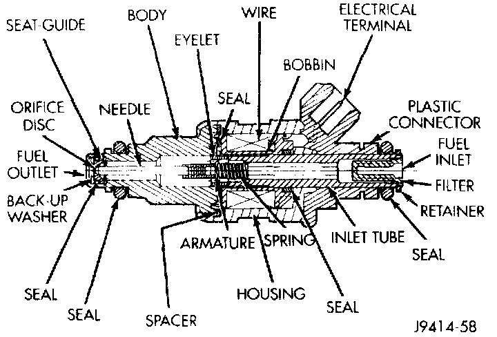

Component Test
Fig. 12 Fuel Injector Internal Components - Typical:

FUEL INJECTOR TEST
To perform a complete test of the fuel injectors and their circuitry, refer to Powertrain Management/Computers and Control Systems/Testing and Inspection/Procedures.
Testing and Inspection
To test the injector only, refer to the following:
Disconnect the fuel injector wire harness connector from the injector. Place an ohmmeter across the injector electrical terminals. Resistance reading should be approximately 12 ohms +/- 1.2 ohms at 20°C (68°F).